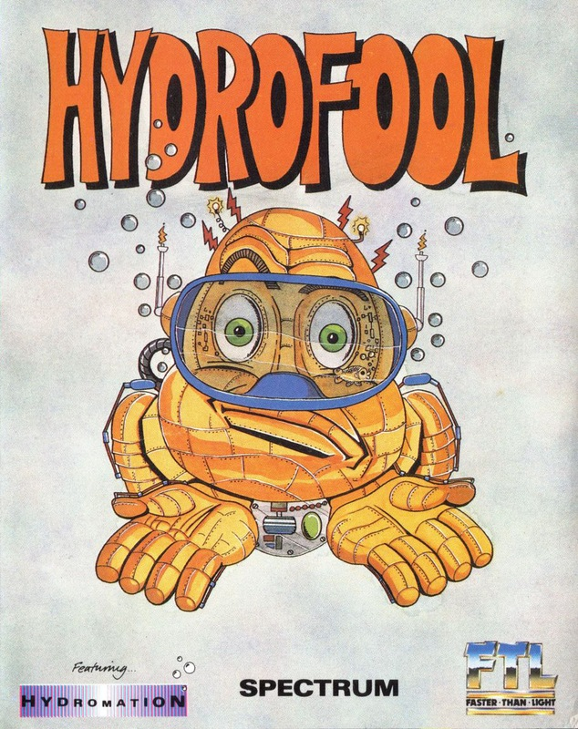
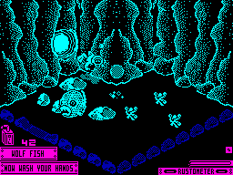
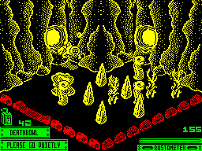
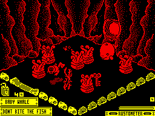

Hydrofool


{kind=link}

| Publisher: | FTL |
| Price: | £7.95 |
| Year: | 1987 |
| Source: | CRASH, Issue 41 |

About a year and a half ago a Self Willed Extreme Environment Organism (SWEEVO to his friends) was sent to a mysterious world, Knutz Folly. Once there Sweevo had to do a spot of tidying up and capture several cute Widgers. Now, after much effort and bumbling, Sweevo has returned with a vengeance and, well, a whimper or two.
The kindly old Robo-Master gnashed his metallic teeth and roaring at Sweevo said, ‘I didn’t expect you back so soon... so, go and clean out the Deathbowl and don’t return until you’ve finished doing that.’

Sweevo encounters the over-friendly dolphin
Sweevo, being the wary soul that he is, picked up his copy of Galactic Aquarist (essential reading for all inter galactic cleaners of deadly bowls) and read:
The gigantic aquarium known as the Deathbowl is now so heavily polluted that the only remedy is to completely drain it by pulling out each of the four plugs.
So there you have it, Sweevo with diving gear in tow has been abandoned on another strange world with only his wits (or lack of them) to protect him from the plethora of weird and wonderful creatures, none of whom are too fond of alien life forms draining away their habitat. Each of the plugs must be pulled in the correct order else an inaccessible level is created. And to pull a plug several puzzles must be solved by moving specific objects to particular places.
Unfortunately these objects are often guarded by Deathbowl’s denizens, or they may even be a part of a particularly despicable nasty. Luckily, though, there are weapons to be found in abundance for the destruction of these creatures but watch the ammo level, it’s very limited.

popping sea serpents, clamping clams
and sharp rocks threaten. Can he find a
hidden weapon?
Deathbowl is constructed on several interlinking levels in a similar manner to Sweevo’s World. Whirlpools are used to travel downwards to the next level and bubbles for upward movement. The game itself is presented in 3D isometric views, using two, but varying, colours for the caverns.
Sweevo has several lives, one being lost each time his Rustometer reaches maximum. Such occurs rapidly as soon as Sweevo makes contact with water (silly fool forgot his wet suit), but if it starts to get dangerously high, rusting can be temporarily halted by finding the oil cans that pollute Deathbowl. Touching guardians is none too healthy either, so once armed — shoot to kill!
The game is spread out over more than 200 caverns, and the 128K version boasts an even bigger map as well as a Rob Hubbard score, a cartographer’s delight no less. Hydrofool is some mean beast to beat, the programmers estimate a game time of about four hours for experienced cleaners.
CRITICISM

tentacles bring on instant rust.
“Sweevo’s World was a very original game that had a quality very hard to define, and one that hasn’t quite been reproduced since. Bearing this in mind I was annoyed to hear that FTL were doing a follow up. Hydrofool has turned out to be a Sweevo’s clone (the similarities are too numerous to mention) that’s playable and compelling, but not the step forward that its ‘parent’ was. The puzzles take a while to solve but aren’t frighteningly hard once you’ve learnt the basic layout of the playing area. The graphics leave little to be desired, some character definition is excellent, and the sub-aqua effect works convincingly well. Sound, too, is more than adequate (except for the re-run of the Sweevo’s World title tune), but the 128K tune and effects are far superior. This should provide plenty of puzzle solving and mapping fun for all. Recommended.”
BEN
“Essentially Hydrofool’s concept is a rehash of the old Sweevo’s game, new names and different baddies perhaps, but very similar — even the same Sweevo’s tune. However, there are some completely new graphics. The main characters are superbly animated and drawn with a great amount of detail. I found Hydrofool much harder to play than its predecessor, although the problems are fairly logically set out. The backgrounds create a good feeling of depth with the creatures adding to the strong atmosphere. If you’ve seen Sweevo’s then don’t expect much different — still a great game though.”
PAUL
“Some game formats can stand cloning by their creators, and what made Sweevo’s World was the content more than the look — which is saying a lot because it looked great. So Hydrofool survives less for its originality than because it’s still a highly enjoyable romp, packed with loads of puzzles, a need for dexterity and plenty of atmosphere — the first time you see a sea serpent pop up from the floor ranks as quite a shock. The feel of the game relies heavily on the high quality graphics — Sweevo really does seem to be swimming under water. With the large number of screens, and the intricately woven Greg Follis puzzles, Hydrofool should hold its appeal for quite some time.”
RICKY
COMMENTS
| Control keys: | Q W E R T Y U I O P up left/up right, A S D F G H J K L down left/down right, Space to fire |
| Joystick: | Kempston, Interface 2, Cursor |
| Use of colour: | Monochromatic playing area |
| Graphics: | Superb definition and animation |
| Sound: | Good tune and spot FX, better still on 128 |
| Skill levels: | One |
| Screens: | Over 200 |
| General rating: | A first class sequel, entertaining, addictive and highly amusing. |
| Presentation: | 84% |
| Graphics: | 91% |
| Playability: | 85% |
| Addictive qualities: | 90% |
| Value for money: | 83% |
| Overall: | 90% |